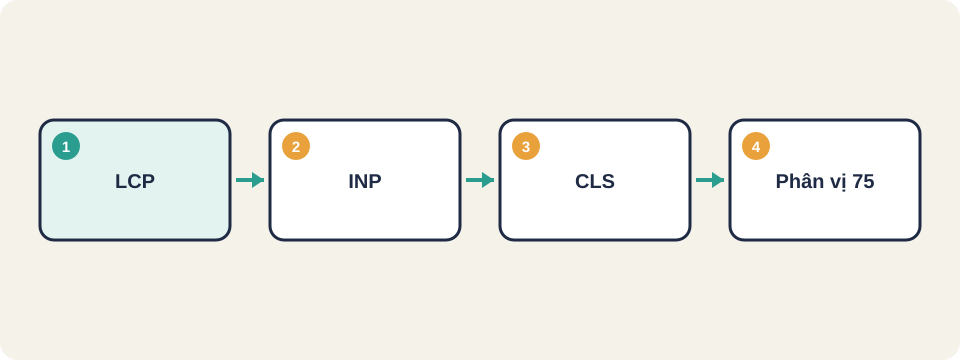
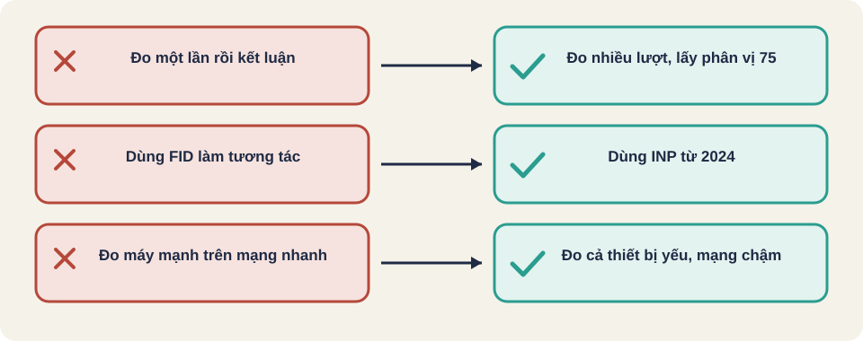

Hình vẽ gốc, dùng để minh họa thứ tự các bước chính của bài.
Đo tốc độ tải và độ ổn định của trang theo ba chỉ số được Google dùng, và cách đọc kết quả.

Hình vẽ gốc, dùng để minh họa thứ tự các bước chính của bài.
| Chỉ số | Đo cái gì | Mức tốt |
|---|---|---|
| LCP | Nội dung lớn nhất hiện ra sau bao lâu | Dưới 2,5 giây |
| INP | Thời gian phản hồi khi người dùng bấm | Dưới 200 ms |
| CLS | Mức độ bố cục bị nhảy | Dưới 0,1 |
Đo trên thiết bị và mạng giống người dùng thật, ví dụ điện thoại 4G. Đo nhiều lần và lấy giá trị ở phân vị thứ 75 của các lượt tải, không lấy một lần duy nhất. INP thay thế FID làm chỉ số tương tác từ 12/03/2024.
Thuật ngữ trong slide này: Phân vị 75 (p75): Ngưỡng mà 75% lượt tải nhanh hơn. Dùng để đánh giá trải nghiệm chung của nhiều lượt.
LCP: 1,8 s → tốt
INP: 340 ms → cần cải thiện (kiểm xử lý JavaScript khi bấm)
CLS: 0,05 → tốtLighthouse, PageSpeed Insights và báo cáo trong trình duyệt có thể đo các chỉ số này. Nên đặt ngưỡng trong quy trình CI để phát hiện trang bị chậm đi sau mỗi lần thay đổi.

Thuật ngữ trong slide này: Phân vị 75 (p75): Ngưỡng mà 75% lượt tải nhanh hơn. Dùng để đánh giá trải nghiệm chung của nhiều lượt.
LCP (Largest Contentful Paint)
INP (Interaction to Next Paint)
CLS (Cumulative Layout Shift)
Phân vị 75 (p75)
Mỗi lượt tải có một kết quả khác nhau. Phân vị 75 nghĩa là 75% lượt tải nhanh hơn hoặc bằng mức này.
Thuật ngữ trong slide này: Phân vị 75 (p75): Ngưỡng mà 75% lượt tải nhanh hơn. Dùng để đánh giá trải nghiệm chung của nhiều lượt.
Thuật ngữ trong slide này: Phân vị 75 (p75): Ngưỡng mà 75% lượt tải nhanh hơn. Dùng để đánh giá trải nghiệm chung của nhiều lượt.
Theo web.dev, một trang được coi là đạt khi cả LCP, INP và CLS đều đạt ngưỡng ở phân vị 75 của các lượt truy cập. Tách riêng máy tính và điện thoại khi đo.
Nguồn: web.dev, Core Web Vitals [đã đọc].
Thuật ngữ trong slide này: Phân vị 75 (p75): Ngưỡng mà 75% lượt tải nhanh hơn. Dùng để đánh giá trải nghiệm chung của nhiều lượt.
Nguồn: github.com/PaulWaltersDev/FreeLearningResourcesForSoftwareTesters, mục "Mục mở rộng (liên quan Test Automation)". Tìm tên tài liệu trong repo để lấy liên kết.